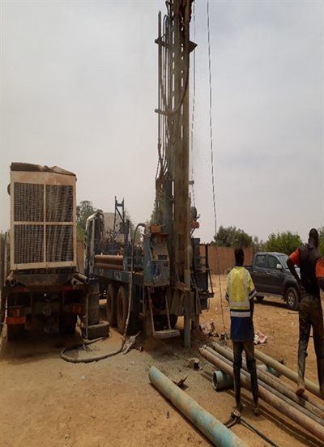
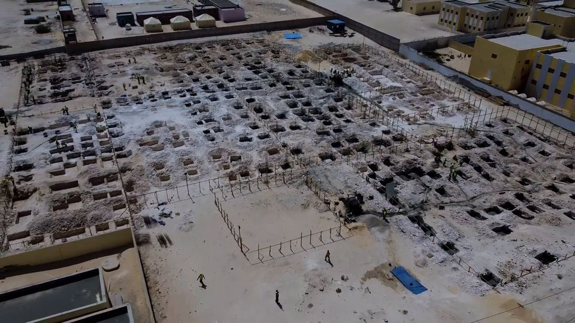

شركة نيجرية للبناء والأشغال العمومية · منذ 1987البناء في النيجر منذ 1987
شريككم الموثوق في البناء والأشغال العمومية في النيجر وفي عموم المنطقة
منذ 1987، تنجز SOBAFOR SA مشاريع كبرى في النيجر وموريتانيا وبوركينا فاسو ومالي وتشاد. ونعمل في مجالات البناء والطرق والمياه وحفر الآبار والطاقة الشمسية.
- متابعة مستمرة للجودة والسلامة
- آليات أشغال خاصة بالشركة
- عرض سعر سريع عبر واتساب



مراجعنا لدى المؤسسات
- القصر الرئاسي
- ASECNA
- مطار أغاديز
- الصندوق الوطني للضمان الاجتماعي
- سفارة موريتانيا
ورشتنا الرائدة الجارية
مدرسة تقنيات الإعلام والاتصال بنواذيبو
مدرسة التعليم الفني والتكوين المهني لتقنيات الإعلام و الاتصال بنواذيبو
نواذيبو، موريتانيا · تقدّم الأشغال حتى سبتمبر 2026
تشيّد SOBAFOR لصالح الدولة الموريتانية مدرسة للتكوين في مهن الرقمنة، ستواكب تطوّر منطقة نواذيبو الحرة. مجمّع متكامل يضم مرافق التعليم والداخليات والمطعم والمساكن.
- 9 قاعات دراسية
- 16 مختبرًا وورشة
- مدرّج يتسع لـ150 مقعدًا
- مطعم يتسع لـ300 مقعد
- داخليتان للبنات والبنين، 40 غرفة في كل منهما
- مساكن وظيفية وطرق داخلية ومواقف سيارات
حالة تقدّم الأشغال
- تحديد المواقع والأساساتمكتمل
- الهيكل من الخرسانة المسلحةجارٍ
- أعمال البناء بالطوبجارٍ
- أعمال التجهيز والتشطيباتقادم
تفاصيل الأشغال حسب المبنى (عدد المباني: 5)
- المبنى الإداري
- تركيب الدعامات ووضع الروافد وبلوك الهوردي في الجناحين؛ وتصنيع الروافد المسلحة (حديد بقطر 14 و16 ملم) جارٍ.
- المبنى التعليمي
- تصنيع الأعمدة وتركيبها وصبّها؛ أعمال البناء بالطوب جارية؛ قوالب الدرج جاهزة في انتظار الصب. التوسعة الغربية: أعمال البناء بالطوب جارية.
- مبنى المدرّج
- تركيب الدعامات وصبّ العناصر الخرسانية المسلحة جارٍ.
- مبيت البنين
- تصنيع الأعمدة وتركيبها وتركيب قوالبها جارٍ.
- مبيت البنات
- تصنيع الروافد وتركيب قوالب الأعمدة والحزام الخرساني العلوي جارٍ.

شاهدوا الفيديو دقيقة و36 ثانية · 8,7 ميغابايت14,5 ميغابايت
مهننا
مجالات تدخلنا الرئيسية
فرق متعددة التخصصات لقيادة الورشات المعقدة بجودة وسلامة واحترام للآجال.
المباني والهندسة المدنية
تصميم وإنجاز المباني العمومية والفلل والمراكز الثقافية ومفوضيات الشرطة والمنشآت المؤسسية.
الطرق والصرف الصحي
تهيئة الطرق والمسالك الريفية والأعمال الترابية وتصريف المياه ومنشآت الصرف الصحي الحضرية والريفية.
المياه والطاقة الشمسية
حفر الآبار وإمداد مياه الشرب والمياه القروية والحلول الشمسية المستقلة للمناطق المعزولة.
مراجعنا
مشاريع مرجعية
إنجازات معترف بها فعليًا في النيجر.
مراجعنا لدى المؤسسات
- تنفيذ أشغال التعبيد والإنارة والقنوات وتصريف المياه وإمداد المياه، وكشك حراسة من طابقين ومهبط مروحيات في القصر الرئاسي
- المركز الجهوي للملاحة الجوية في مطار نيامي
- مقر ASECNA في نيامي
- السور المحيطي لمطار أغاديز
الأثر المحلي
- بناء 10 فلل من طراز F3 في ديفا (الصندوق الوطني للضمان الاجتماعي)
- منشآت مدرسية في نيامي
- منشآت مائية وشبكات مياه الشرب
- بناء فلل ومرافق عمومية
إنجازاتنا
ورشاتنا بالصور والفيديو
لمحة عن ورشاتنا: المباني والطرق والصرف الصحي والمياه وحفر الآبار، إضافة إلى أسطول آلياتنا المتاح للتأجير.
شاهدوا جميع إنجازاتنا
57 صورة وفيديو، مصنّفة حسب المجال
منهجيتنا
كيف نعمل
أربع مراحل وجهة تواصل واحدة، من أول رفع ميداني حتى استلام المنشأة.
تحليل الاحتياج
نحدّد معكم أهدافكم وقيود الموقع وتوقعاتكم المالية.
الدراسات الفنية
يضع مهندسونا الحلول الفنية والجدول الزمني للتنفيذ.
تنفيذ الأشغال
تعبئة الفرق والآليات، ومتابعة مستمرة للجودة والسلامة.
الاستلام والمواكبة
تسليم مطابق للمواصفات، ونقل للمعلومات، ودعم بعد انتهاء المشروع.
أسئلة شائعة
الأسئلة الشائعة
هل تعملون في النيجر فقط؟
النيجر هو مجال عملنا الرئيسي، لكننا نعمل أيضًا في بوركينا فاسو ومالي وتشاد وموريتانيا حسب المشاريع.
هل يمكنكم إدارة مشاريع متعددة القطاعات؟
نعم، تعمل أقسامنا للطرق والمباني والمياه والدراسات الفنية وتأجير الآليات بتنسيق تام.
كيف أطلب عرض سعر سريعًا؟
من صفحة عرض السعر، يمكنكم إرسال معلوماتكم ببضع نقرات عبر واتساب (+227 81 91 91 54) وسنتواصل معكم سريعًا.
لنتحدث عن مشروعكم
هل لديكم مشروع تريدون إطلاقه؟
بناء أو طريق أو حفر بئر أو تأجير آليات: صِفوا لنا احتياجكم، وسيردّ عليكم مسؤول المشروع بتقدير للتكلفة وجدول زمني للتنفيذ.